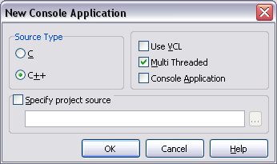
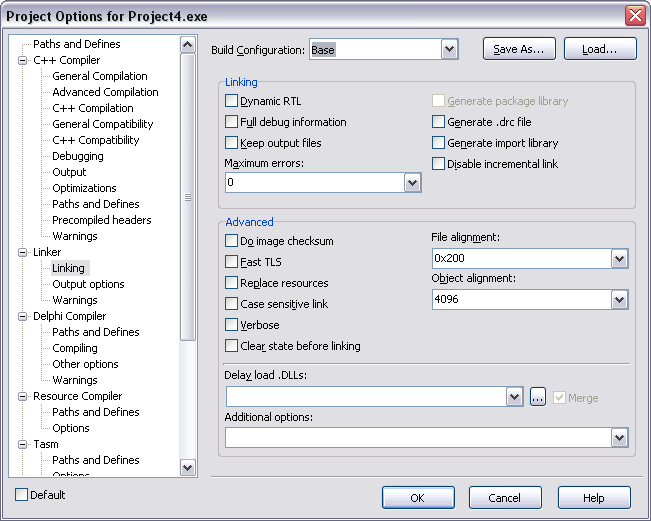

From the menu File->New->Other choose to create a new Console Application.
In the New Console Application dialog uncheck the Use VCL and Console Application checkboxes:

If you want to use static linking for OWLNext library (which is recommended), open the Project Options dialog
and go to the Linker/Linking page. Select the Base Build Configuration and uncheck the Dynamic RTL checkbox:

To test if everything is set up correctly, open the created .cpp file for the project and replace it's
contents with the following code:
//-----------------------------------------------------------------------
// ObjectWindows - (C) Copyright 1991, 1994 by Borland International
// Tutorial application -- step01.cpp
//-----------------------------------------------------------------------
#include <owl/applicat.h>
#include <owl/framewin.h>
class TDrawApp : public TApplication
{
public:
TDrawApp() : TApplication() {}
void InitMainWindow()
{
SetMainWindow(new TFrameWindow(0, "Sample ObjectWindows Program"));
}
};
int
OwlMain(int /* argc */, char* /* argv */ [])
{
return TDrawApp().Run();
}
Build and run the application. It should show an empty window with the title
Sample ObjectWindows Program